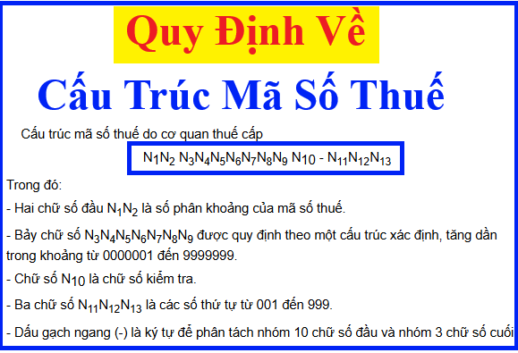

Quy định về cấu trúc mã số thuế của doanh nghiệp, tổ chức và mã số thuế dành cho hộ gia đình, hộ kinh doanh, cá nhân theo Thông tư 86/2024/TT-BTC quy định về đăng ký thuế
Theo điều 5 của Thông tư 86/2024/TT-BTC (ban hành ngày 23/12/2024, có hiệu lực từ ngày 06/02/2025) thì:
1. Mã số thuế bao gồm mã số thuế dành cho doanh nghiệp, tổ chức và mã số thuế dành cho hộ gia đình, hộ kinh doanh, cá nhân. Trong đó:
a) Mã số thuế dành cho doanh nghiệp, tổ chức do cơ quan thuế cấp theo quy định tại khoản 2, khoản 3, khoản 4 Điều này.
b) Mã số thuế dành cho hộ gia đình, hộ kinh doanh, cá nhân là mã số thuế do cơ quan thuế cấp đối với các trường hợp quy định tại điểm a, đ, e, h khoản 4 Điều này; là số định danh cá nhân do Bộ Công an cấp theo quy định của pháp luật về căn cước đối với trường hợp sử dụng số định danh cá nhân thay cho mã số thuế theo quy định tại khoản 5 Điều này.
2. Cấu trúc mã số thuế do cơ quan thuế cấp
N1N2 N3N4N5N6N7N8N9 N10 - N11N12N13
Trong đó:
- Hai chữ số đầu N1N2 là số phân khoảng của mã số thuế.
- Bảy chữ số N3N4N5N6N7N8N9 được quy định theo một cấu trúc xác định, tăng dần trong khoảng từ 0000001 đến 9999999.
- Chữ số N10 là chữ số kiểm tra.
- Ba chữ số N11N12N13 là các số thứ tự từ 001 đến 999.
- Dấu gạch ngang (-) là ký tự để phân tách nhóm 10 chữ số đầu và nhóm 3 chữ số cuối.
3. Mã số doanh nghiệp, mã số hợp tác xã, mã số tổ hợp tác, mã số đơn vị phụ thuộc của doanh nghiệp, mã số đơn vị phụ thuộc của hợp tác xã được cấp theo quy định của pháp luật về đăng ký doanh nghiệp, đăng ký hợp tác xã, đăng ký tổ hợp tác là mã số thuế.
4. Phân loại cấu trúc mã số thuế do cơ quan thuế cấp
a) Mã số thuế 10 chữ số được sử dụng cho doanh nghiệp, hợp tác xã, tổ chức có tư cách pháp nhân hoặc tổ chức không có tư cách pháp nhân nhưng trực tiếp phát sinh nghĩa vụ thuế (sau đây gọi là đơn vị độc lập); cá nhân là người có quốc tịch nước ngoài hoặc là người có quốc tịch Việt Nam sinh sống tại nước ngoài không có số định danh cá nhân được xác lập từ Cơ sở dữ liệu quốc gia về dân cư.
b) Mã số thuế 13 chữ số và dấu gạch ngang (-) dùng để phân tách giữa 10 số đầu và 3 số cuối được sử dụng cho đơn vị phụ thuộc và các đối tượng khác quy định tại điểm c, e, g của khoản này.
c) Người nộp thuế là tổ chức kinh tế, tổ chức khác theo quy định tại điểm a, b, c, d, n khoản 2 Điều 4 Thông tư này có tư cách pháp nhân hoặc không có tư cách pháp nhân nhưng trực tiếp phát sinh nghĩa vụ thuế và tự chịu trách nhiệm về toàn bộ nghĩa vụ thuế trước pháp luật được cấp mã số thuế 10 chữ số. Các đơn vị phụ thuộc được thành lập theo quy định của pháp luật của người nộp thuế này nếu phát sinh nghĩa vụ thuế và trực tiếp khai thuế, nộp thuế được cấp mã số thuế 13 chữ số.
Trong đó: điểm a, b, c, d, n khoản 2 Điều 4 Thông tư 86/2024/TT-BTC như sau:
Điều 4. Đối tượng đăng ký thuế
...
2. Người nộp thuế thuộc đối tượng thực hiện đăng ký thuế trực tiếp với cơ quan thuế, bao gồm:
a) Doanh nghiệp hoạt động trong các lĩnh vực chuyên ngành không phải đăng ký doanh nghiệp qua cơ quan đăng ký kinh doanh theo quy định của pháp luật chuyên ngành (sau đây gọi là Tổ chức kinh tế).
b) Đơn vị sự nghiệp, tổ chức kinh tế của lực lượng vũ trang, tổ chức kinh tế của các tổ chức chính trị, chính trị-xã hội, xã hội, xã hội-nghề nghiệp hoạt động kinh doanh theo quy định của pháp luật nhưng không phải đăng ký doanh nghiệp qua cơ quan đăng ký kinh doanh; tổ chức của các nước có chung đường biên giới đất liền với Việt Nam thực hiện hoạt động mua, bán, trao đổi hàng hóa tại chợ biên giới, chợ cửa khẩu, chợ trong khu kinh tế cửa khẩu; văn phòng đại diện của tổ chức nước ngoài tại Việt Nam; tổ hợp tác được thành lập và tổ chức hoạt động theo quy định tại Nghị định số 77/2019/NĐ-CP ngày 10/10/2019 của Chính phủ về tổ hợp tác nhưng không thuộc trường hợp đăng ký kinh doanh qua cơ quan đăng ký kinh doanh theo quy định tại khoản 2 Điều 107 Luật Hợp tác xã (sau đây gọi là Tổ chức kinh tế).
c) Tổ chức được thành lập bởi cơ quan có thẩm quyền không có hoạt động sản xuất, kinh doanh nhưng phát sinh nghĩa vụ với ngân sách nhà nước (sau đây gọi là Tổ chức khác).
d) Tổ chức, cá nhân nước ngoài và tổ chức ở Việt Nam sử dụng tiền viện trợ nhân đạo, viện trợ không hoàn lại của nước ngoài mua hàng hóa, dịch vụ có thuế giá trị gia tăng ở Việt Nam để viện trợ không hoàn lại, viện trợ nhân đạo; các cơ quan đại diện ngoại giao, cơ quan lãnh sự và cơ quan đại diện của tổ chức quốc tế tại Việt Nam thuộc đối tượng được hoàn thuế giá trị gia tăng đối với đối tượng hưởng ưu đãi miễn trừ ngoại giao; Chủ dự án ODA thuộc diện được hoàn thuế giá trị gia tăng, Văn phòng đại diện nhà tài trợ dự án ODA, tổ chức do phía nhà tài trợ nước ngoài chỉ định quản lý chương trình, dự án ODA không hoàn lại (sau đây gọi là Tổ chức khác).
...
n) Tổ chức, hộ gia đình và cá nhân khác có nghĩa vụ với ngân sách nhà nước.
d) Nhà thầu nước ngoài, nhà thầu phụ nước ngoài theo quy định tại điểm đ khoản 2 Điều 4 Thông tư này đăng ký nộp thuế nhà thầu trực tiếp với cơ quan thuế thì được cấp mã số thuế 10 chữ số theo từng hợp đồng. Trường hợp có nhiều nhà thầu nước ngoài thuộc diện nộp thuế trực tiếp với cơ quan thuế trên cùng một hợp đồng nhà thầu ký với bên Việt Nam và các nhà thầu có nhu cầu kê khai, nộp thuế riêng thì mỗi nhà thầu nước ngoài được cấp riêng một mã số thuế 10 số.
Trường hợp nhà thầu nước ngoài liên danh với các tổ chức kinh tế Việt Nam để tiến hành kinh doanh tại Việt Nam trên cơ sở hợp đồng thầu và các bên tham gia liên danh thành lập ra Ban Điều hành liên danh, Ban Điều hành liên danh thực hiện hạch toán kế toán, có tài khoản tại ngân hàng, chịu trách nhiệm phát hành hóa đơn; hoặc tổ chức kinh tế tại Việt Nam tham gia liên danh chịu trách nhiệm hạch toán chung và chia lợi nhuận cho các bên tham gia liên danh thì được cấp mã số thuế 10 chữ số để kê khai, nộp thuế cho hợp đồng thầu.
Trường hợp nhà thầu nước ngoài, nhà thầu phụ nước ngoài có văn phòng tại Việt Nam đã được bên Việt Nam kê khai, khấu trừ nộp thuế thay về thuế nhà thầu thì nhà thầu nước ngoài, nhà thầu phụ nước ngoài được cấp một mã số thuế 10 chữ số để kê khai tất cả các nghĩa vụ thuế khác (trừ thuế nhà thầu) tại Việt Nam và cung cấp mã số thuế cho bên Việt Nam.
Trong đó: điểm đ khoản 2 Điều 4 Thông tư 86/2024/TT-BTC như sau:
Điều 4. Đối tượng đăng ký thuế
...
2. Người nộp thuế thuộc đối tượng thực hiện đăng ký thuế trực tiếp với cơ quan thuế, bao gồm:
...
đ) Tổ chức nước ngoài không có tư cách pháp nhân tại Việt Nam, cá nhân nước ngoài hành nghề độc lập kinh doanh tại Việt Nam phù hợp với pháp luật Việt Nam có thu nhập phát sinh tại Việt Nam hoặc có phát sinh nghĩa vụ thuế tại Việt Nam (sau đây gọi là Nhà thầu nước ngoài, nhà thầu phụ nước ngoài).
đ) Nhà cung cấp ở nước ngoài theo quy định tại điểm e khoản 2 Điều 4 Thông tư này chưa có mã số thuế tại Việt Nam khi đăng ký thuế trực tiếp với cơ quan thuế được cấp mã số thuế 10 chữ số. Nhà cung cấp ở nước ngoài sử dụng mã số thuế đã được cấp để trực tiếp kê khai, nộp thuế hoặc cung cấp mã số thuế cho tổ chức, cá nhân tại Việt Nam được nhà cung cấp ở nước ngoài ủy quyền hoặc cung cấp cho ngân hàng thương mại, tổ chức cung ứng dịch vụ trung gian thanh toán để thực hiện khấu trừ, nộp thay nghĩa vụ thuế và kê khai vào Bảng kê về khấu trừ thuế của nhà cung cấp ở nước ngoài tại Việt Nam.
Trong đó: điểm e khoản 2 Điều 4 Thông tư 86/2024/TT-BTC như sau:
Điều 4. Đối tượng đăng ký thuế
...
2. Người nộp thuế thuộc đối tượng thực hiện đăng ký thuế trực tiếp với cơ quan thuế, bao gồm:
...
e) Nhà cung cấp ở nước ngoài không có cơ sở thường trú tại Việt Nam, cá nhân nước ngoài không cư trú tại Việt Nam có hoạt động kinh doanh thương mại điện tử, kinh doanh dựa trên nền tảng số và các dịch vụ khác với tổ chức, cá nhân ở Việt Nam (sau đây gọi là Nhà cung cấp ở nước ngoài).
e) Tổ chức, cá nhân khấu trừ, nộp thay theo quy định tại điểm g khoản 2 Điều 4 Thông tư này được cấp mã số thuế 10 chữ số (sau đây gọi là mã số thuế nộp thay) để kê khai, nộp thuế thay cho nhà thầu nước ngoài, nhà thầu phụ nước ngoài, nhà cung cấp ở nước ngoài, tổ chức và cá nhân có hợp đồng hoặc văn bản hợp tác kinh doanh nếu có nhu cầu cấp mã số thuế riêng cho hợp đồng hợp tác kinh doanh. Nhà thầu nước ngoài, nhà thầu phụ nước ngoài theo quy định tại điểm đ khoản 2 Điều 4 Thông tư này được bên Việt Nam kê khai, nộp thay thuế nhà thầu thì được cấp mã số thuế 13 chữ số theo mã số thuế nộp thay của bên Việt Nam để thực hiện xác nhận hoàn thành nghĩa vụ thuế nhà thầu tại Việt Nam.
Khi người nộp thuế thay đổi thông tin đăng ký thuế, tạm ngừng hoạt động, kinh doanh hoặc tiếp tục hoạt động, kinh doanh trước thời hạn, chấm dứt hiệu lực mã số thuế và khôi phục mã số thuế theo quy định đối với mã số thuế của người nộp thuế thì mã số thuế nộp thay được cơ quan thuế cập nhật tương ứng theo thông tin, trạng thái mã số thuế của người nộp thuế. Người nộp thuế không phải nộp hồ sơ theo quy định tại Chương II, Chương III Thông tư này đối với mã số thuế nộp thay.
Trong đó: điểm g, điểm đ khoản 2 Điều 4 Thông tư 86/2024/TT-BTC như sau:
Điều 4. Đối tượng đăng ký thuế
...
2. Người nộp thuế thuộc đối tượng thực hiện đăng ký thuế trực tiếp với cơ quan thuế, bao gồm:
...
g) Doanh nghiệp, tổ chức, cá nhân có trách nhiệm khấu trừ và nộp thuế thay cho người nộp thuế khác phải kê khai và xác định nghĩa vụ thuế riêng so với nghĩa vụ của người nộp thuế theo quy định của pháp luật về quản lý thuế (trừ cơ quan chi trả thu nhập khi khấu trừ, nộp thay thuế thu nhập cá nhân); Ngân hàng thương mại, tổ chức cung ứng dịch vụ trung gian thanh toán hoặc tổ chức, cá nhân được nhà cung cấp ở nước ngoài ủy quyền có trách nhiệm kê khai, khấu trừ và nộp thuế thay cho nhà cung cấp ở nước ngoài (sau đây gọi là Tổ chức, cá nhân khấu trừ nộp thay). Tổ chức chi trả thu nhập khi khấu trừ, nộp thay thuế thu nhập cá nhân sử dụng mã số thuế đã cấp để khai, nộp thuế thu nhập cá nhân khấu trừ, nộp thay.
đ) Tổ chức nước ngoài không có tư cách pháp nhân tại Việt Nam, cá nhân nước ngoài hành nghề độc lập kinh doanh tại Việt Nam phù hợp với pháp luật Việt Nam có thu nhập phát sinh tại Việt Nam hoặc có phát sinh nghĩa vụ thuế tại Việt Nam (sau đây gọi là Nhà thầu nước ngoài, nhà thầu phụ nước ngoài).
g) Người điều hành, công ty điều hành chung, doanh nghiệp liên doanh, tổ chức được Chính phủ Việt Nam giao nhiệm vụ tiếp nhận phần lãi dầu, khí được chia của Việt Nam thuộc các mỏ dầu khí tại vùng chồng lấn theo quy định tại điểm h khoản 2 Điều 4 Thông tư này được cấp mã số thuế 10 chữ số theo từng hợp đồng dầu khí hoặc văn bản thoả thuận hoặc giấy tờ tương đương khác. Nhà thầu, nhà đầu tư tham gia hợp đồng dầu khí được cấp mã số thuế 13 chữ số theo mã số thuế 10 số của từng hợp đồng dầu khí để thực hiện nghĩa vụ thuế riêng theo hợp đồng dầu khí (bao gồm cả thuế thu nhập doanh nghiệp đối với thu nhập từ chuyển nhượng quyền lợi tham gia hợp đồng dầu khí). Công ty mẹ - Tập đoàn Dầu khí Quốc gia Việt Nam đại diện nước chủ nhà nhận phần lãi được chia từ các hợp đồng dầu khí được cấp mã số thuế 13 chữ số theo mã số thuế 10 số của từng hợp đồng dầu khí để kê khai, nộp thuế đối với phần lãi được chia theo từng hợp đồng dầu khí.
Trong đó: điểm h khoản 2 Điều 4 Thông tư 86/2024/TT-BTC như sau:
Điều 4. Đối tượng đăng ký thuế
Điều 4. Đối tượng đăng ký thuế
...
2. Người nộp thuế thuộc đối tượng thực hiện đăng ký thuế trực tiếp với cơ quan thuế, bao gồm:
...
h) Người điều hành, công ty điều hành chung, doanh nghiệp liên doanh, tổ chức được Chính phủ Việt Nam giao nhiệm vụ tiếp nhận phần được chia của Việt Nam thuộc các mỏ dầu khí tại vùng chồng lấn, nhà thầu, nhà đầu tư tham gia hợp đồng dầu khí, công ty mẹ - Tập đoàn Dầu khí Quốc gia Việt Nam đại diện nước chủ nhà nhận phần lãi được chia từ các hợp đồng dầu khí.
h) Tổ chức, cá nhân theo quy định tại điểm m khoản 2 Điều 4 Thông tư này có một hoặc nhiều hợp đồng ủy nhiệm thu với một cơ quan thuế thì được cấp một mã số thuế nộp thay để nộp khoản tiền đã thu của người nộp thuế vào ngân sách nhà nước.
Trong đó: điểm m khoản 2 Điều 4 Thông tư 86/2024/TT-BTC như sau:
Điều 4. Đối tượng đăng ký thuế
Điều 4. Đối tượng đăng ký thuế
...
2. Người nộp thuế thuộc đối tượng thực hiện đăng ký thuế trực tiếp với cơ quan thuế, bao gồm:
...
m) Tổ chức, cá nhân được cơ quan thuế ủy nhiệm thu.
5. Số định danh cá nhân của công dân Việt Nam do Bộ Công an cấp theo quy định của pháp luật về căn cước là dãy số tự nhiên gồm 12 chữ số được sử dụng thay cho mã số thuế của người nộp thuế là cá nhân, người phụ thuộc quy định tại điểm k, l, n khoản 2 Điều 4 Thông tư này; đồng thời, số định danh cá nhân của người đại diện hộ gia đình, đại diện hộ kinh doanh, cá nhân kinh doanh cũng được sử dụng thay cho mã số thuế của hộ gia đình, hộ kinh doanh, cá nhân kinh doanh đó.
Trong đó: điểm k, l, n khoản 2 Điều 4 Thông tư 86/2024/TT-BTC như sau:
Điều 4. Đối tượng đăng ký thuế
Điều 4. Đối tượng đăng ký thuế
...
2. Người nộp thuế thuộc đối tượng thực hiện đăng ký thuế trực tiếp với cơ quan thuế, bao gồm:
...
k) Cá nhân có thu nhập thuộc diện chịu thuế thu nhập cá nhân (trừ cá nhân kinh doanh).
l) Cá nhân là người phụ thuộc theo quy định của pháp luật về thuế thu nhập cá nhân.
...
n) Tổ chức, hộ gia đình và cá nhân khác có nghĩa vụ với ngân sách nhà nước.
| Lưu ý: |
|
Theo khoản 2 điều 38 của Thông tư 86/2024/TT-BTC thì:
Mã số thuế do cơ quan thuế cấp cho cá nhân, hộ gia đình, hộ kinh doanh được thực hiện đến hết ngày 30/6/2025. Kể từ ngày 01/7/2025, người nộp thuế, cơ quan quản lý thuế, cơ quan, tổ chức, cá nhân khác có liên quan đến việc sử dụng mã số thuế theo quy định tại Điều 35 Luật Quản lý thuế thực hiện sử dụng số định danh cá nhân thay cho mã số thuế.
Vậy là:
Số định danh cá nhân được sử dụng thay cho mã số thuế cá nhân từ 01/7/2025
|
